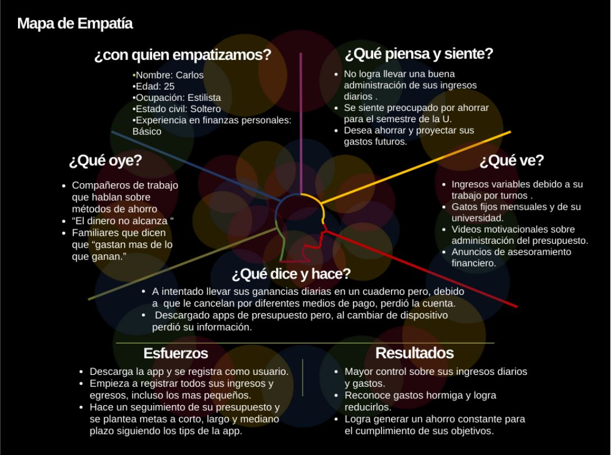
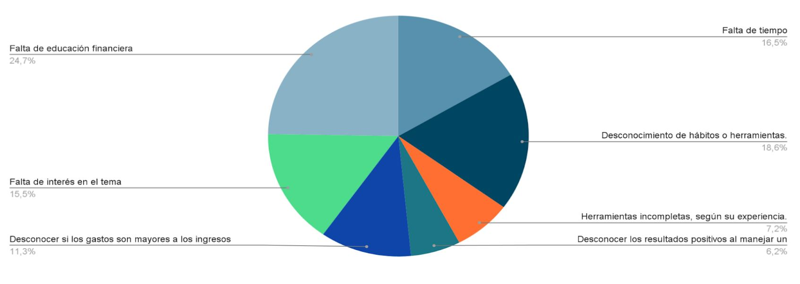
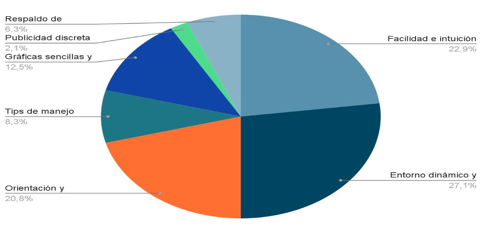
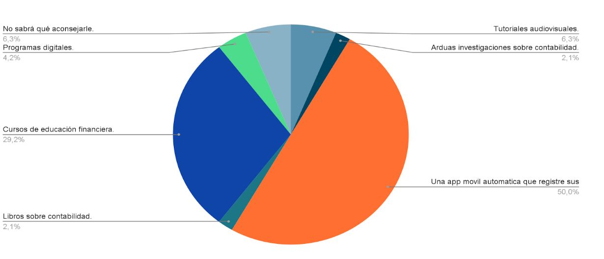

Integrantes
- Andrés B. Ramírez
- Dayana E. Medina
- David Alejandro J. Merchán
- Fabián A. Lombana
- Brayan Steven López
Programa
Facultad de Ingeniería, Universidad San Buenaventura Bogotá D.C.
Desarrollo de Software y automatización
Planteamiento del problema
¿Cómo instruir a las personas al adecuado manejo del presupuesto a través de una aplicación móvil/multiplataforma que cumpla con las necesidades de cada usuario y mejore su calidad de vida mediante herramientas financieras?

Objetivos
Objetivo general
Implementar herramientas para la gestión de finanzas mediante una app móvil, lo cual controlará gastos personales, familiares y sociales.
Objetivos específicos
- Diseñar un modelo estadístico que me permita recolectar los datos para identificar los usos financieros y las falencias.
- Desarrollar una encuesta que permita el análisis de los datos de nuestra estadística en el uso de aplicaciones financieras.
- Hacer el maquetado de la aplicación.
- Aplicar triple restricción de proyectos al nuestro
- Diseñar hipótesis a través de nuestro método de recolección de datos
- Aplicación de la matriz de riesgos
- Definir un gestor de base de datos para nuestro proyecto
- Aplicar el modelo entidad relación a nuestro proyecto
- Definir el lenguaje de programación más óptimo que vamos a utilizar
Introducción
Las finanzas personales en nuestro entorno son consideradas como algo transitorio, por lo cual se aborda de manera superficial y no se le da la importancia necesaria. Esto como consecuencia lleva a las personas a tener una negativa administración de sus ingresos, conduciendo a secuelas como tener que solicitar préstamos constantes, trabajar solo para subsistir , no poder ahorrar y no cumplir metas financieras. Esto en el presente no es solo una falencia sino que es perjudicial para sobrellevar la situación financiera del país y del mundo, ya que no se es consciente de la importancia de mejorar los hábitos financieros y el impacto positivo que puede ocasionar en la vida cotidiana de cada persona. A dónde se quiere llegar, es a poder ofrecer a las personas una opción factible para mejorar su situación financiera, logrando un control financiero de manera ordenada y completa. En este contexto exploramos las necesidades presentadas por las personas y se buscará que a partir de una serie de herramientas se pueda encontrar una solución a corto, mediano o largo plazo dependiendo de las secuelas evidenciadas. En este escrito se expondrá el proceso de desarrollo de una app móvil que cubra las necesidades extraídas de una recopilación de datos que tomaremos de encuestas dirigidas a todas aquellas personas interesadas en manejar su presupuesto de manera digital, de estos datos se busca agrupar los hábitos perjudiciales más repetitivos entre estas. A partir de esto la app será capaz de brindar herramientas como mostrar de manera cronológica un presupuesto tanto presente como futuro, registrar ingresos y egresos tanto fijos como variables, debitar pagos automáticamente por medio de notificaciones, brindar tips para el mejoramiento de hábitos financieros, personalizar su perfil y manejar diferentes categorías de ingreso de datos dependiendo del usuario.
Justificación
Las finanzas personales son algo primordial en la vida de cualquier persona, esto debido a que constan nuestro patrimonio y se mueve todo el mercado, tanto laboral como personal; es por esto que un adecuado manejo haría la vida de cualquier persona más fácil, es por eso que tomamos el proyecto de un aplicativo móvil de manejo de finanzas y consejos financieros cómo algo de gran importancia y necesidad en nuestro entorno, siendo una aplicación demasiado intuitiva y sencilla de manejar.
Contexto
Las finanzas personales son un aspecto demasiado importante en nuestra vida diaria, es por eso que llevar una gestión de nuestros ingresos y gastos a través de un presupuesto. Sin embargo, las personas no le conceden la importancia necesaria y lo realizan de una manera inconsciente y desordenada, lo cual genera inestabilidad económica. Muchos factores influyen en está problemática, cómo lo son el tiempo, la falta de educación financiera y la procrastinación continua.
Hipótesis
Se cree que la falta de hábitos y conocimientos de las personas en general y su falta de interés en el uso de herramientas financieras está ligada a una escasa o nula educación financiera, esta razón genera un desinterés en llevar y manejar un control financiero personal. Por lo tanto, la hipótesis es que al presentar una herramienta con los requerimientos de los usuarios, estos se interesaran debido a que adquirirán una educación financiera a través de dichos tips y por consiguiente sabrán darle un adecuado uso a la herramienta; obteniendo una mejora en sus finanzas.
Hipótesis de trabajo
La aplicación móvil partirá desde una primera aplicación web, Estas se desarrollarán según se avance de semestre y se obtengan nuevos conocimientos de futuras materias.
Hipótesis estadística
Basado en las respuestas de la primera encuesta aplicada se concluye y se afirma que:
- Se les puede brindar una herramienta completa e intuitiva para que todas las personas puedan manejarla y la vean como un método eficaz ya que aunque la mayoría de personas conoce la importancia de llevar un presupuesto personal, solo un poco más de la mitad aplica métodos para el mismo.
- Al presentarles una herramienta con múltiples tips y consejos financieros está se les hará más atractiva a los usuarios debido a que los motivos más habituales en ellos para no llevar un debido presupuesto son, la falta de educación financiera, falta de interés en el tema, desconocimiento de hábitos y/o herramientas y la falta de tiempo. igualmente alrededor de la mitad de los usuarios declara tener unos ingresos estables para cumplir con sus necesidades generales y otra mitad declara alcanzarle lo justo para cubrir sus necesidades básicas.
- Al querer vender la aplicación financiera esta debe ser muy completa a la hora de manejar múltiples funcionalidades ya que una tercera parte de los usuarios afirma no haber utilizado o escuchado sobre alguna herramienta o aplicación financiera, dentro de estos solo una pequeña parte resalta el uso de “excel” como método de control financiero. Dentro de los requisitos más solicitados dentro de una aplicación móvil son, el tener un entorno dinámico y creativo, orientación al usuario y sea intuitiva y fácil de manejar. También los usuarios recomendarían a otras personas interesadas en el manejo de su presupuesto aplicaciones móviles que registren movimientos y débitos automáticos o que tomen cursos financieros.
Metodología
El objetivo de la presente investigación será la recolección de información clara y completa de las personas a través de una serie de encuestas que tendrán como finalidad conocer sus hábitos financieros, sus experiencias y opiniones frente a herramientas financieras completas y en el caso de estar interesadas en una nueva herramienta de este nivel, cuál sería la funcionalidad que destacaría frente a las ya existentes.
Instrumento de recolección de datos
Encuesta analitica online con restrospectiva
- Es una encuesta que analiza información adquirida según preguntas cortas y concretas de formato abierto y cerrado referente a la experiencia del encuestado de manera online.
- La realización de la encuesta será a través de la plataforma Microsoft Forms, haciendo uso de un correo personal por cada usuario que participe en la misma.
Resultados de Encuesta de seguimiento presupuestal
Preguntas cerradas.
A partir de las preguntas cerradas se sacaron los siguientes resultados: De la interrogante “Actualmente usted ¿Utiliza alguna herramienta para llevar el manejo de su presupuesto?” resalta que: El 71% de los encuestados (34) responde no utilizar, y el 29% (14) restante utiliza diferentes métodos de los cuales destaca el uso de tablas de excel. Y de la interrogante “Partiendo de su experiencia o necesidad ¿Qué factores son importantes para que una aplicación web, móvil o alguna herramienta tecnológica deba implementar para ayudar a su control de gastos o corregir alguna herramienta existente?” resalta que: La gran mayoría de encuestados buscan una herramienta que tenga una interfaz sencilla, donde los datos y resultados se reflejen gráficamente, que el usuario no requiera tener grandes conocimientos financieros para manejar la herramienta, igualmente que al ser intuitiva maneje ciertos tips y sugerencias para poder aportar a el usuario una mejora educativa financieramente, logrando llevar unas finanzas inteligentes.
Graficas tomadas del resultado de la encuesta
¿Qué motivó impide aplicar recurrentemente un debido hábito para el manejo del presupuesto personal y/o familiar?
Si tuviera que llevar un control de su presupuesto, a través de una aplicación móvil, ¿Cuáles de estas características le gustaría tener a su servicio?
Poniéndose en situación en la cuál una persona le pide la ayuda para controlar su vida económica y encontrar una estabilidad para mejorar su calidad de vida ¿Qué método le aconsejaría?
